数阵是由幻方演化出来的另一种数字图。幻方一般均为正方形，图中纵、横、对角线数字和要相等。数阵则不仅有正方形、长方形，还有三角形、圆、多边形、星形、花瓣形、十字形，甚至多种图形的组合。变幻多姿，奇趣迷人。
例1 把2、3、4、5、6这五个数分别填入下面的五个圆圈里，使横竖两行的三个数之和都为11、12或13。
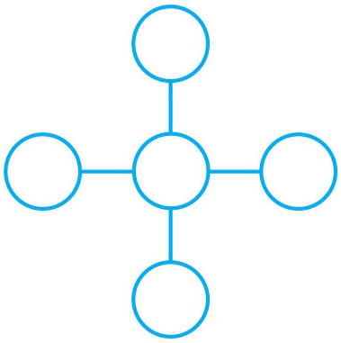
横竖两行的三个数要相等，中间的一个数必定要加两次。我们先解决横竖三个数的和为11的情况，可以把圆圈中的五个数用字母A 、B 、C 、D 、E 来代替。
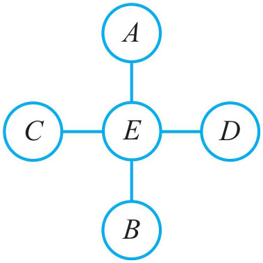
则：A +B +C +D +E =20
再由A +E +B =C +E +D =11推出
A +E +B +C +E +D =11×2=22
两式相减：A +E +B +C +E +D -(A +B +C +D +E )=22-20，可得E =2，即中间填2。然后再根据3+6=4+5便可把五个数填入圆圈中。
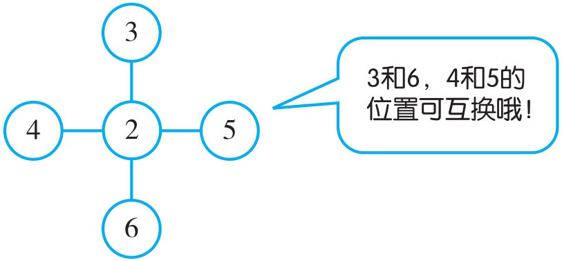
同理：再算和为12或13的情况。
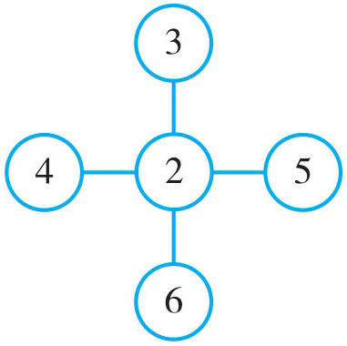
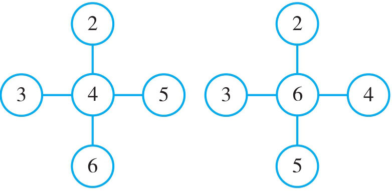
例2 将3~10八个数分别填入下面的 内，使每个大圆上的五个数的和为31。
假设中间两个 中的数为m 、n ，则3+4+5+…+10+m +n =31×2=62，而3+4+5+…+10=52，即m +n =62-52=10。在3~10这八个数中两数之和等于10的有：3+7=4+6。
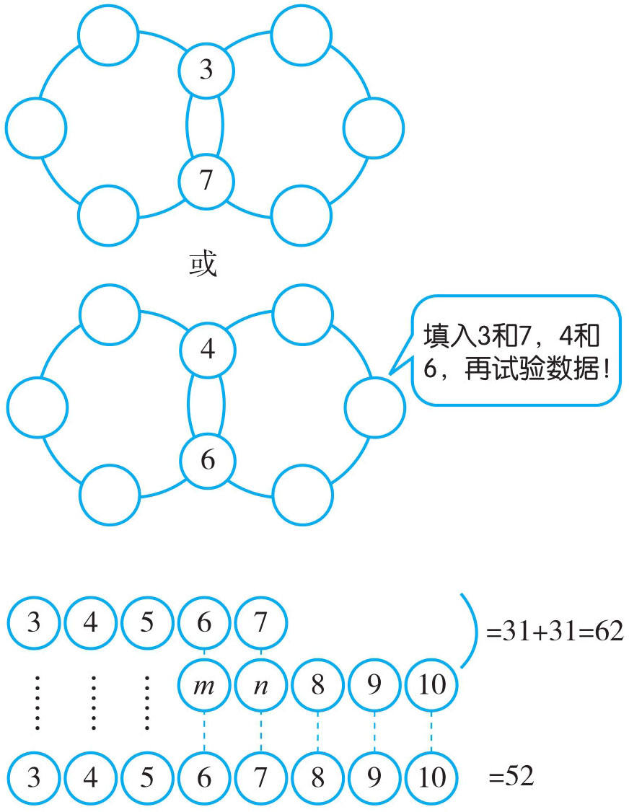
上下相减：m +n =62-52=10。
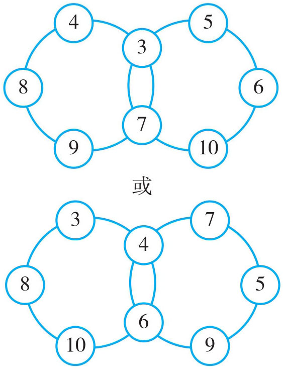
例3 将1~9这九个数分别填入下图中的 内，使每条直线上四个 内数的和相等且最大。
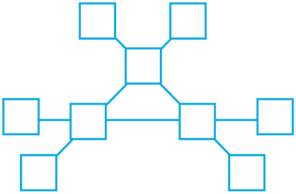
假设中间三个 内的数为a 、b 、c 。在计算三条直线上的和时，a 、b 、c 都算了两次；且要使三条直线上的和相等，说明三条直线上的数的和是3的倍数，也即是1+2+3+…+9+(a +b +c )能被3整除。1+2+3+…+9=45，45能被3整除，那么a +b +c 的和也应被3整除。但要使和最大，只有7+8+9的和最大，且能被3整除，因此a 、b 、c 分别为7、8、9。
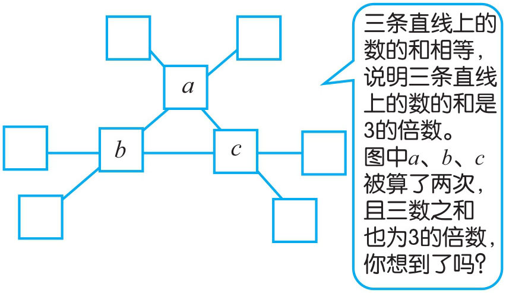
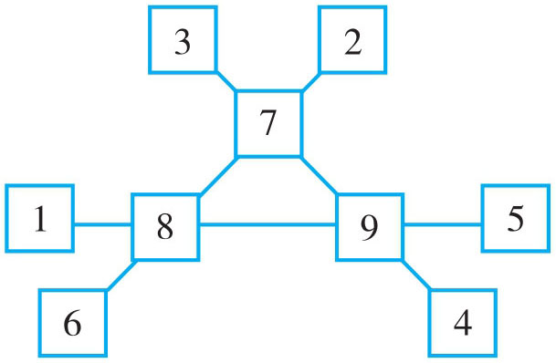
例4 将1~8这八个数填入下面的 内，使横竖两条直线与内外两个圆上 内的四个数之和相等。
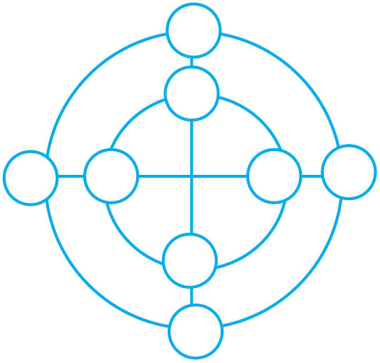
1~8这八个数从内外两个圆来看，可以分成两组（从横竖两条直线上来看同样可以分成两组）。两组的四个数不会交叉相加，因此1+2+3+…+8=36分为两组的和为36÷2=18。从等差数列来思考，可以将1与8、2与7、3与6、4与5结合，将它们分别对应的放到同一个大圆圈与一条直线上即可。
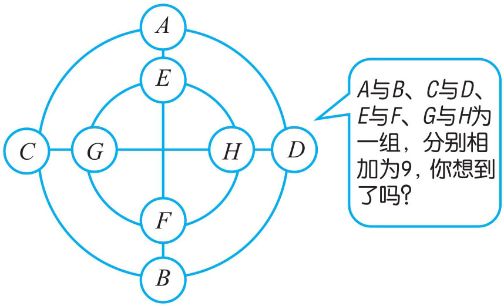
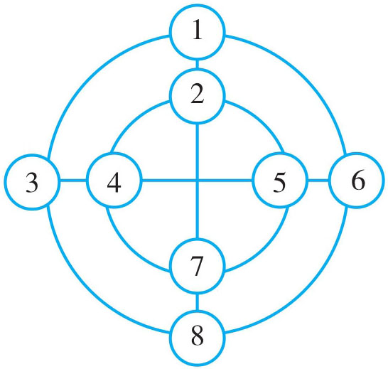
1．将2、3、4、5、6这五个数分别填入下图的五个方格里，使横竖两行的三个数之和都是11、12或13。
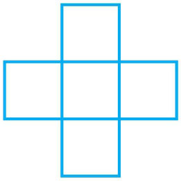
2．把1~7这七个数填入下列“十一”的7个空格里，使在同一直线上的各数和为10。
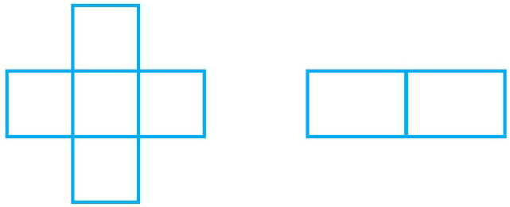
3．将1~6这六个数分别填入下面的 内，使每边上的三个 内的数的和相等。
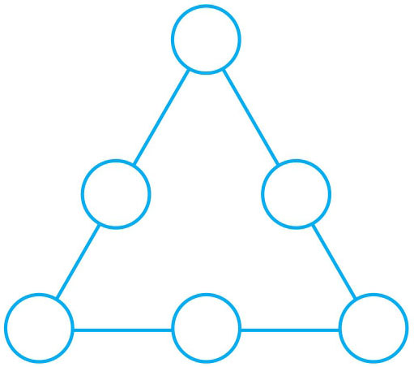
4．将1~9这九个数填入下图的 内，使每条直线上的五个数的和相等。
5．将1~8这八个数分别填入下面的 内（中间不填），使每条边上三个数的和相等。
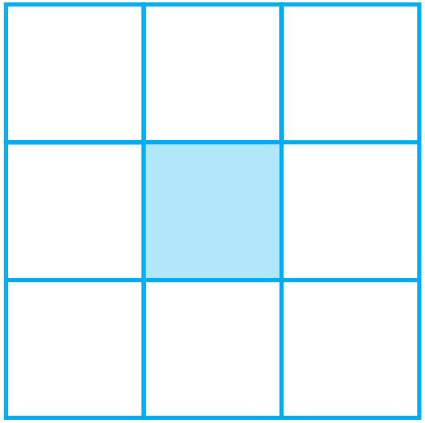
6．将6~15这十个自然数填入下面的 内，使每个大圆上五个 内的数的和等于63。
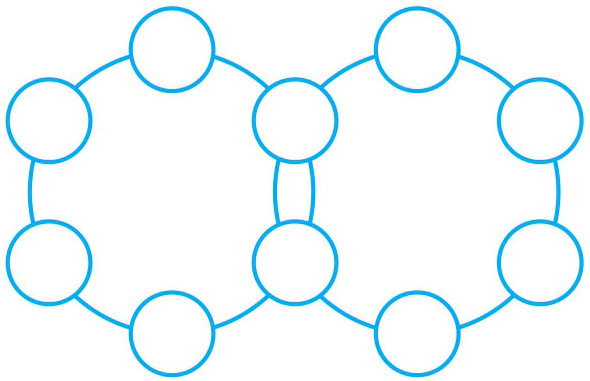
7．将4~9这六个数填入下面的 内，使每条直线上三个 内数的和相等且最大。
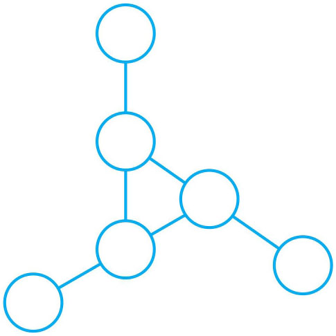
8．将4~12这九个数分别填入下面的 内，使外三角形边上 内数字和等于里面三角形边上 内数字的和。
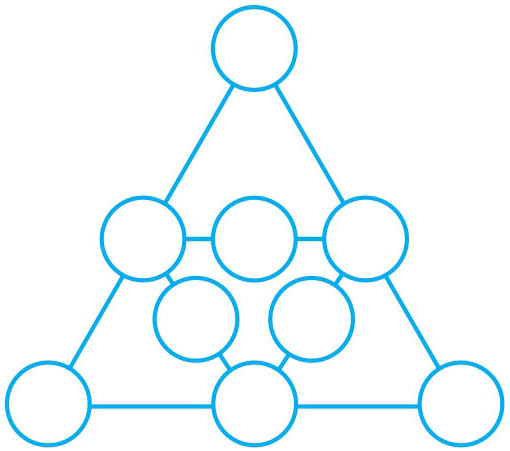
9．将1~8这八个数分别填入下面的 内，使每条直线上 内的三个数的和都相等。
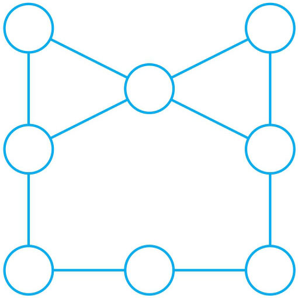